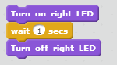

Here you can find some tasks to help you get going with your programs and practise different ways in which to use the blocks! There are two different types of tasks, Motion and Lights.
Read about PedaGogo if you need help completing the following tasks.
1. Try changing the speeds from the minimum speed to the maximum by using the increase speed block, try some different values in the increase block to see the difference.

2. This time, try using a loop to gradually increase the speed up to the maximum speed, then use another loop to decrease the speed down to the minimum speed.
Remember: the max speed is 255 (?) and the minimum speed is ??.
1.Use the turn-blocks to make the robot drive in a square shape and then try a circle.
Try to use loops to do this.
Hint: A circle is like a square, but with many more corners.

2.This time try to use the turn-blocks to make the robot drive in a triangle. The angles should all be the same size. Then try again with different sizes for the angles.
Remember: how to calculate the angles.
1.Use what you have learned about angles to write a program that will tell the robot to drive forward in a zigzag motion. Don't forget to use a loop if you can!

2. This time try to make the robot move forward in a more slithery motion, like a snake.
'
Hint: you can use semi-circles to make the turns smoother.
1.For this task you need to make a variable. Call it Speed and set it to 200. As in task 2.1, use a loop to increase the speed of the robot but this time it should be from minimum speed to 200, the value of your new variable. Use your Speed variable to do this.
Remember: variables can be placed in the diamond shaped blocks which fit nicely in some of the loops.
2.This time, make a variable called SpinTimes and set it to five. Write a program that will make your robot spin around five times using your variable.

Hint: the variable can be changed by -1.
1. In this task you need to create a list. Call it Speeds and add five values (speeds) to your list. Now write a program that increases or decreases the speed by the amounts that you put in your list.
 Hint: use a loop, and the blocks you get with your new list.
Hint: use a loop, and the blocks you get with your new list.
2. This time make a list and add values that you can use in a program instructing the robot to drive in the shape of a square. Don't forget to use a loop!
Hint: you only need to add two values; how many cm to go forward and how many degrees to turn. By clicking on the arrow you can choose the first or last item from a list to use.
Your task now is to complete the following mission, good luck!
En bana som kombinerar saker de learnat men med trickier moment typ
Practise makes perfect!
1. Use the turn on and turn off blocks to blink with the lights five times. Use a loop!
Hint: if the lights are blinking too fast, use a wait block inbetween! 2. This time use a loop to blink with one light at a time, five times each.
1. Use a repeat block and a variable. Call the variable timesToBlink and use it to make the lights blink 10 times.
Remember: how to make a variable?2. This time use the same variable but use the repeat until block to blink with every other light 10 times.
1. In task 2 of the motion chapter, you had to write a program telling the robot to drive in a square. Do this again but this time blink with the lights before each turn.
2. This time, rewrite the program telling your robot to move forward in zigzag and add a few blinks of the lights before each turn. Only blink with one of the lights to show which direction your are turning.
1. Set timesToBlink to 0. Change your variable by 1 and check if your variable is bigger than 0 and less than 5, if it is blink with the left lights, if not, blink with the right lights. Do this ten times.
2. This time, if your variable is an even number, blink with the left light, if it is odd, blink with the right light. Do this 10 times also.
Remember: how to check if it is an even number?1. This task will be like task 4.2 but you will need to create a list. Set timesToBlink to 1 and loop the following 10 times: add timesToBlink to the list, then increase its value by 1. Then with a second loop say that if the first element in the list is less than 5, blink with the right light, else blink with the left light. Then remove the first element. Do this (second loop) until the list is empty.
Remember: how to make a list?2. This time, using the second loop until the list is empty, you will instead check if the value of the first element in the list is an even number, blink with the right light, if it is odd, blink with the left light.
Your task now is to complete the following mission, good luck!
En bana som kombinerar saker de learnat men med trickier moment typ